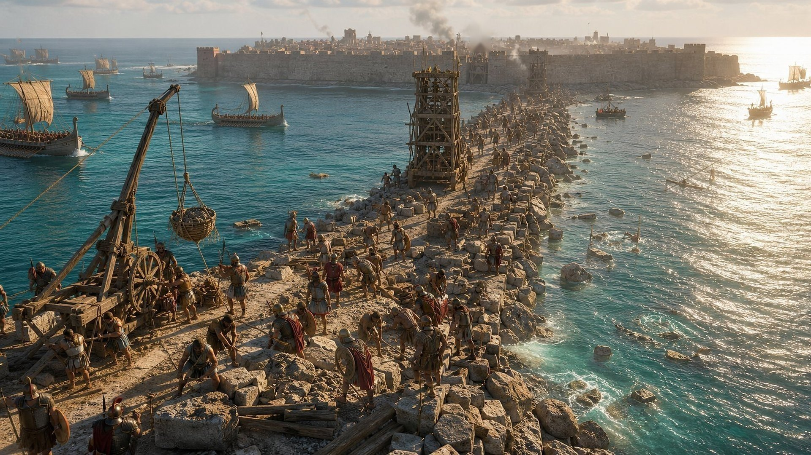
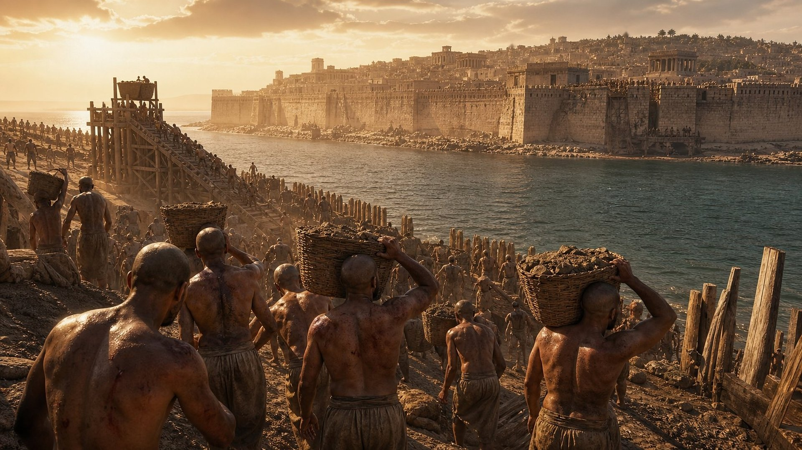
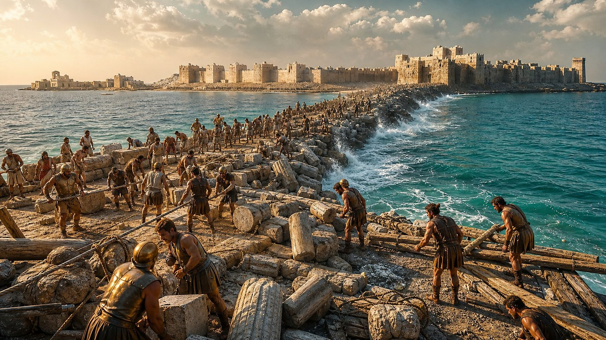
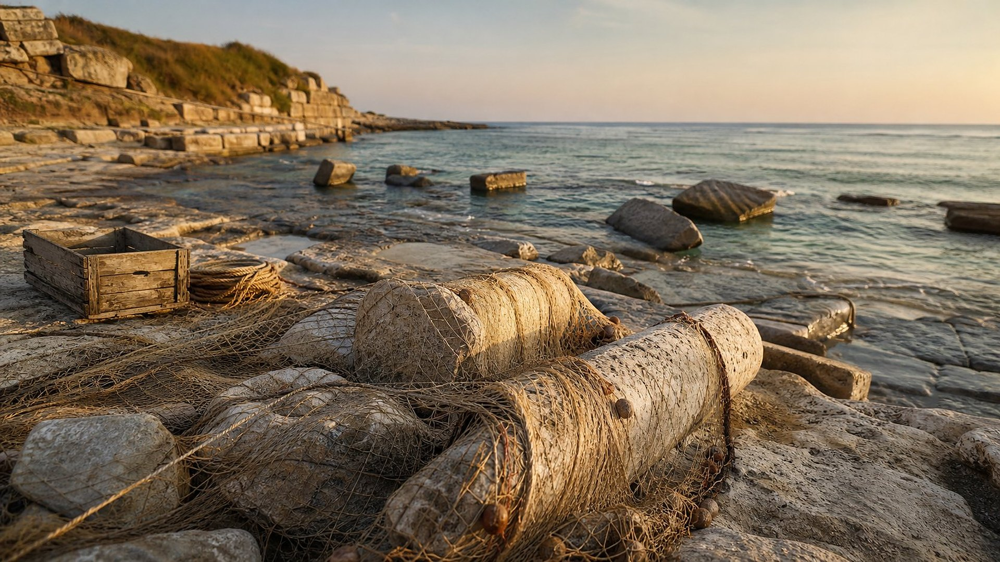

Flavius Josèphe, Contre Apion I, 156
Siège de Tyr par Nabuchodonosor pendant 13 ans, sous le roi Ithobaal.
Notice de référence (site externe)
Salle 03 sur 17
Une île réputée imprenable, une chaussée bâtie avec les ruines de la ville côtière.
Statut : ACCOMPLIE
L’annonce · vers 591 av. n. è.
Au début du VIe siècle avant notre ère, Tyr est la plus puissante des cités phéniciennes. Ses navires sillonnent la Méditerranée, ses comptoirs s’étendent jusqu’à l’Espagne. Elle a deux visages : une ville sur la côte et, à quelque 700 mètres au large, une cité bâtie sur une île, ceinte de hautes murailles.
C’est alors que le prophète Ézékiel, exilé à Babylone, annonce sa chute. Il ne parle pas d’un seul ennemi mais de « nations nombreuses », qui monteront contre elle comme les vagues de la mer. Il nomme le premier : Nabuchodonosor, roi de Babylone.
Et il ajoute un détail étrange : les pierres, le bois et jusqu’à la poussière de Tyr seront jetés « au milieu des eaux ». Ce détail n’a pris tout son sens que 259 ans plus tard.
à cause de cela, ainsi dit le Seigneur, Jéhovah: Voici, j’en veux à toi, Tyr ! et je ferai monter contre toi des nations nombreuses, comme la mer fait monter ses flots. Et elles détruiront les murs de Tyr et renverseront ses tours ; et je balaierai d’elle sa poussière, et je ferai d’elle un rocher nu. Elle sera un lieu pour étendre les filets, au milieu de la mer ; car j’ai parlé, dit le Seigneur, Jéhovah ; et elle deviendra la proie des nations ;
Et ils feront une proie de tes richesses, et pilleront tes biens, et renverseront tes murs, et abattront tes maisons de plaisance ; et ils mettront tes pierres, et ton bois, et ta poussière, au milieu des eaux.
Première vague · VIe siècle av. n. è.

Peu après la prise de Jérusalem, l’armée de Nabuchodonosor met le siège devant Tyr. Selon l’historien Flavius Josèphe, qui cite les annales phéniciennes, ce siège dure treize ans, sous le règne du roi Ithobaal.
La ville de la côte est à la portée des Babyloniens. Mais la cité de l’île, ravitaillée par la mer, tient bon. Tyr finit par se soumettre, sans que l’armée babylonienne en retire de butin.
Ézékiel le note lui-même, avec une franchise remarquable : les soldats ont travaillé jusqu’à avoir la tête chauve et les épaules écorchées, et leur roi n’a reçu « aucun salaire ». La prophétie ne prétend donc pas que Nabuchodonosor accomplit tout : il n’est que la première des « nations nombreuses ».
Car ainsi dit le Seigneur, Jéhovah: Voici, je fais venir du nord, contre Tyr, Nebucadretsar, roi de Babylone, le roi des rois, avec des chevaux, et des chars, et des cavaliers, et un rassemblement et un peuple nombreux.
Fils d’homme, Nebucadretsar, roi de Babylone, a fait travailler son armée à un grand travail contre Tyr: toute tête en est devenue chauve, et toute épaule en a été écorchée ; et il n’a eu de Tyr aucun salaire, ni pour lui, ni pour son armée, pour le travail qu’il a fait contre elle.
Curseur temporel
Faites glisser le curseur ou choisissez une date pour voir le paysage de Tyr se transformer, du siège babylonien à aujourd’hui.
Schéma non à l’échelle
Après 607 av. n. è.
Peu après la chute de Jérusalem, Nabuchodonosor met le siège devant Tyr. La ville de la côte est à sa portée ; la cité de l’île, à quelque 700 mètres du rivage, lui échappe.
Niveau de preuve : FAIT ARCHÉOLOGIQUE Transformation du littoral étudiée par carottages (PR-012) ; récits du siège : PR-010, PR-011.
Deuxième vague · 332 av. n. è.

Deux siècles et demi plus tard, Alexandre le Grand descend la côte phénicienne. Tyr refuse de lui ouvrir ses portes. Sans flotte capable de la vaincre sur mer, il décide de relier l’île au continent.
Les historiens anciens, Arrien, Diodore de Sicile et Quinte-Curce, décrivent le chantier : on démolit ce qui reste de l’ancienne ville de la côte et l’on jette ses pierres, ses bois et ses gravats dans le bras de mer. La chaussée avance malgré les attaques des Tyriens. Après sept mois, la cité de l’île tombe.
Exactement ce qu’annonçait Ézékiel : ses pierres, son bois et sa poussière « au milieu des eaux ». Vers 518 av. n. è., après le siège babylonien, le prophète Zacharie avait d’ailleurs annoncé une nouvelle chute de la forteresse de l’île.
Et Tyr s’est bâti une forteresse, et elle amasse l’argent comme de la poussière, et l’or comme la boue des rues. Voici, le Seigneur s’en emparera et brisera sa force dans la mer, et elle sera dévorée par le feu.
Annoncé · accompli
Détail 1
« … à cause de cela, ainsi dit le Seigneur, Jéhovah: Voici, j’en veux à toi, Tyr ! et je ferai monter contre toi des nations nombreuses, comme la mer fait monter ses flots. »
Détail 2
« Fils d’homme, Nebucadretsar, roi de Babylone, a fait travailler son armée à un grand travail contre Tyr: toute tête en est devenue chauve, et toute épaule en a été écorchée ; et il n’a eu de Tyr aucun salaire, ni pour lui, ni pour son armée, pour le travail qu’il a fait contre elle. »
Ce qui s’est passé
Siège de 13 ans ; la cité insulaire n’est pas pillée.
Niveau de preuve : DONNÉE HISTORIQUE Preuves : PR-010
Détail 3
« Et ils feront une proie de tes richesses, et pilleront tes biens, et renverseront tes murs, et abattront tes maisons de plaisance ; et ils mettront tes pierres, et ton bois, et ta poussière, au milieu des eaux. »
Détail 4
« Et je ferai de toi un rocher nu ; tu seras un lieu pour étendre les filets ; et tu ne seras plus bâtie ; car moi, Jéhovah, j’ai parlé, dit le Seigneur, Jéhovah. »
Ce qui s’est passé
L’ancienne cité de pierre a été rasée ; des pêcheurs utilisent encore le port.
Niveau de preuve : DÉBATTU Preuves : PR-013
Détail n° 4

Après Alexandre, d’autres « nations » se succèdent à Tyr : Grecs, Romains, Byzantins, Arabes, croisés. En 1291, la ville est détruite une nouvelle fois. Les voyageurs des siècles suivants décrivent un lieu pauvre, où des pêcheurs font sécher leurs filets parmi les ruines.
La puissance qui dominait les mers ne s’est jamais relevée. Aujourd’hui, sur la presqu’île, les vestiges antiques forment un site archéologique inscrit au patrimoine mondial, et le petit port de pêche est toujours actif.
Et je ferai de toi un rocher nu ; tu seras un lieu pour étendre les filets ; et tu ne seras plus bâtie ; car moi, Jéhovah, j’ai parlé, dit le Seigneur, Jéhovah.
Dossier
Récits antiques des deux sièges, étude géologique de la chaussée, état actuel du site.
Siège de Tyr par Nabuchodonosor pendant 13 ans, sous le roi Ithobaal.
Notice de référence (site externe)Alexandre assiège l’île-cité sept mois et construit une chaussée vers l’île avec les matériaux de la ville continentale.
Notice de référence (site externe)La chaussée d’environ 1 000 m construite en 332 s’appuie sur un banc de sable naturel ; elle a transformé l’île en presqu’île (tombolo).
Notice de référence (site externe)Vestiges surtout romains, byzantins et médiévaux ; une ville moderne (Sour) occupe une partie du site. Inscrit sur la Liste du patrimoine mondial en péril en 2026.
Notice de référence (site externe)Questions fréquentes
Une ville moderne occupe une partie du site, mais la grande cité phénicienne n’a jamais été reconstruite comme puissance. Le site discute ce point avec un badge DÉBATTU.
La Bible le reconnaît elle-même (Ézékiel 29:18) : le texte distingue des vagues successives, et c’est Alexandre qui jette les ruines dans la mer.